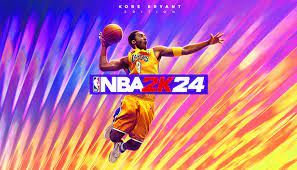

Sporto Žaidimai
Sporto žaidimai yra skirti imituoti įvairias sporto šakas, tokias kaip futbolas, krepšinis, ledo ritulys ir kitos. Šie žaidimai dažnai turi tikrovišką grafiką ir žaidimo mechaniką, leidžiančią žaidėjams patirti sporto šakų veiksmą savo ekranuose. Populiariausi sporto žaidimai:
- FIFA - futbolo simuliatorius, kuriame žaidėjai gali žaisti su savo mėgstamomis komandomis ir dalyvauti įvairiuose turnyruose.
- NBA 2K - krepšinio simuliatorius, kuris suteikia žaidėjams galimybę valdyti NBA komandas ir žaidėjus, dalyvauti rungtynėse ir siekti pergalės.
- Madden NFL - amerikietiško futbolo simuliatorius, kuriame žaidėjai gali valdyti NFL komandas, kurti strategijas ir kovoti dėl Super Bowl titulo.
- MLB The Show - beisbolo simuliatorius, leidžiantis žaidėjams žaisti su MLB komandomis ir dalyvauti beisbolo varžybose.
Sporto žaidimai yra labai populiarūs tarp sporto gerbėjų ir dažnai turi daugelio žaidėjų režimus, leidžiančius varžytis su draugais ar kitais žaidėjais iš viso pasaulio.